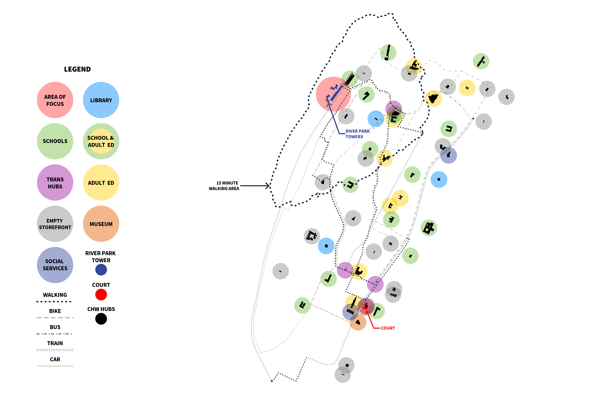

1 / 2

--
2 / 2

--
In an effort to make information about evictions and the eviction process more accessible, we've developed an information campaign. To figure out how this campaign would be deployed we first wanted to look at the existing network of spaces and the modes of transportation people use within it. This includes walking distances, bike, train and bus routes as well as car traffic. We chose a 15 minute walking area surrounding the River Park Towers to look at more closely.
Within this vicinity there are several buildings identified in our existing network as well as a few of the Community Health Hubs. Our plan is to utilize these spaces in the information campaign. Which can include things like partnering with schools and postering around transit hubs.
This campaign consists of two modes of information distribution: physical and digital. For the physical component, we've design a line of graphic posters that could be easily deployed around high eviction areas like the River Park Towers.

For example, we can use the graphic posters to access people passing by the highway overpass between the River Park Towers and P.S.274

The Campaign also targets frequently used transit stops, like this University Ave bus stop or the B/D subway station
This set of graphic posters intends to grab people's attention and direct them to the Community Health Hubs or to the digital portion of the campign.
This site is also a component of the campaign. The site acts as a repository for our research and proposal, as well as a tool to direct people to the resources they need.